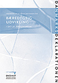

|  | DanmarksDeklarationen - erklæring om en dansk dagsorden for bæredygtig udvikling i det 21. århundrede Overrækkelse af DanmarksDeklarationen til regering og Folketing Tirsdag den 23. januar 2001 kl. 13.00 i Fællessalen på Christiansborg, Miljø- og Energiminister Svend Auken modtager DanmarksDeklarationen og der er forskellige talere - se hele programmet for arrangementet |
| In English | Organisationer der har tilsluttet sig DanmarksDeklarationen |
| Udprint underskriftspapir - til brug ved tilslutning |